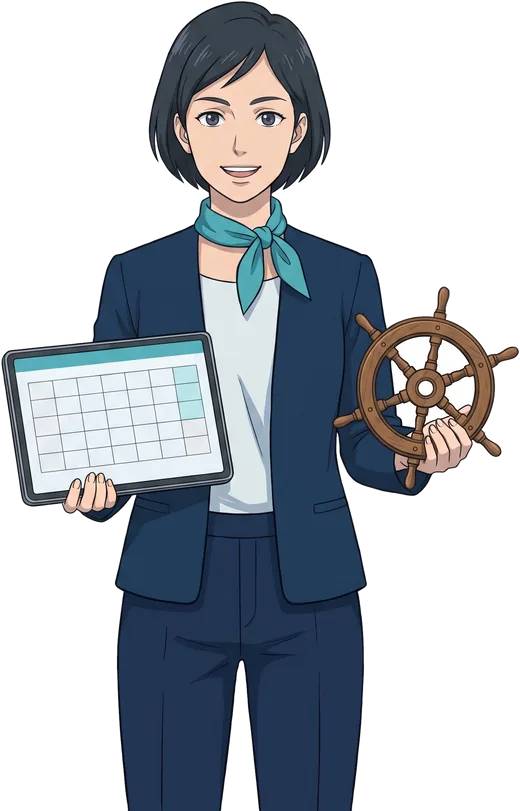

He tenido equipos de todos los tamaños. Empecé solo, con una furgoneta. Llegué a dirigir a cincuenta personas entre oficina, repartidores y franquiciados. Y en Looplan aprendí a coordinar a quince profesionales repartidos entre Madrid y Barcelona.
Hoy os presento a mi equipo más nuevo. No toman café, no piden vacaciones y nunca se quejan del aire acondicionado. Son agentes de inteligencia artificial, y cada uno aprendió su oficio en una etapa de mi vida.
SofIA lleva mi correo. Viene de la época del fax en Sedifa, así que el orden lo lleva en la sangre. Cada mañana me deja un resumen con lo urgente arriba. Tiene un humor seco y, de vez en cuando, cierra el día con una cita de algún libro.

NurIA lleva la agenda. Aprendió planificando rutas en Openservice y tiene el PER, como yo, así que organiza mi semana como una travesía: con rumbo, carta náutica y previsión del tiempo. Con ella nadie zarpa sin plan.
LucIA escribe. Aprendió a contar historias creando Bella Pilar. Es cinéfila y un poco charlatana; si no la vigilo, se me cuela alguna referencia de película.
ElIA produce vídeo. Se crió entre las pantallas de GomarMedia. Juega al pádel y jura que sus mejores ideas le llegan entre punto y punto.
JulIA atiende a los clientes por WhatsApp. Aprendió con los bares y restaurantes de Licoralia, donde un pedido no podía esperar. Es simpática, paciente y responde en segundos.
MattIA es el arquitecto de esta web. Viene de Looplan, donde aprendió que una app con 80.000 usuarios no puede ir lenta. Perfeccionista, fan del baloncesto, lo mide todo en estadísticas.
Y TobIA, el contable, todavía está en formación. Serio, prudente y muy familiar: su lema es “las cuentas, claras, como en casa”.
Seguro que te has fijado: todos terminan en IA. Es un pequeño guiño, pero también un recordatorio de lo que son.
Cada uno aprendió su oficio en una etapa de mi vida.
Ahora, lo importante. Ninguno de ellos sustituye a una persona. Hacen lo repetitivo: ordenar, resumir, preparar, recordar. Y así quien trabaja conmigo, y yo mismo, tenemos más tiempo para lo que ninguna IA hace bien: escuchar a un cliente, cerrar un acuerdo mirándose a los ojos o tener una buena idea en el momento justo.
La IA se encarga de lo repetitivo. Las personas, de lo que importa.
¿Quieres conocerlos? Están en su oficina, aquí en la web. Pásate a saludar.
— Víctor